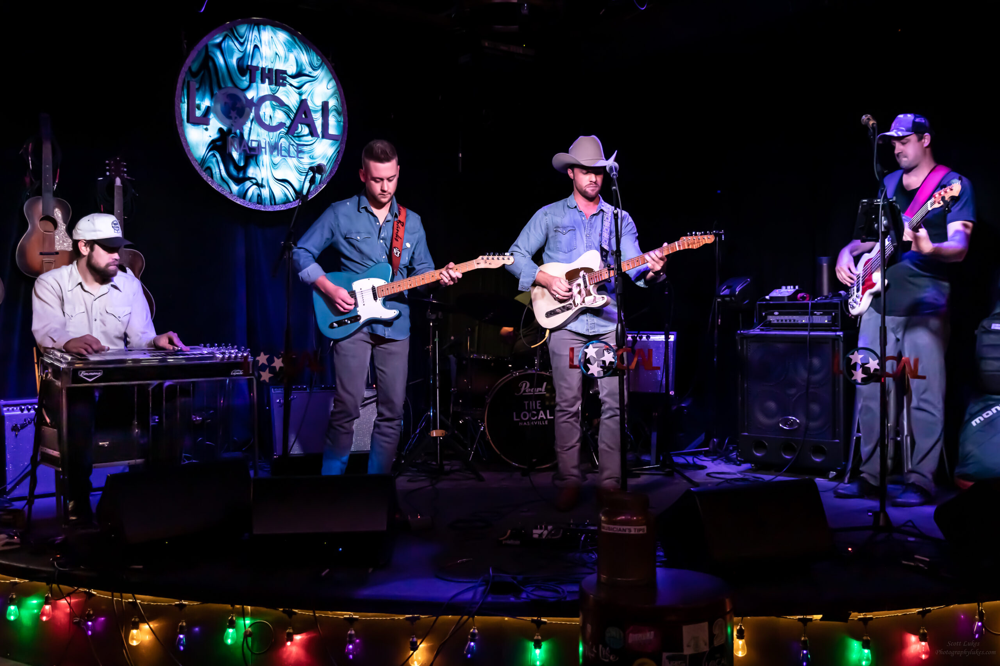
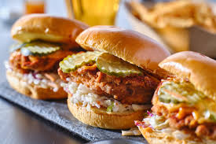
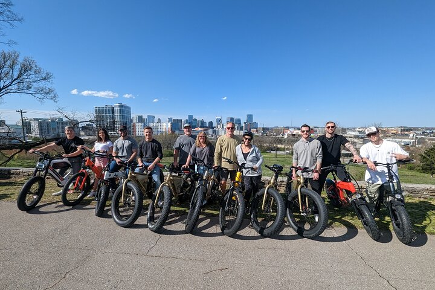

Live Music Events
Experience the best live music in Nashville with exclusive access to iconic venues.

Culinary Adventures
Embark on a tasting journey featuring Nashville’s signature dishes and hidden gems.

Scenic Bike Rides
Enjoy the beautiful sights of Nashville with our scenic bike tours tailored for all levels.